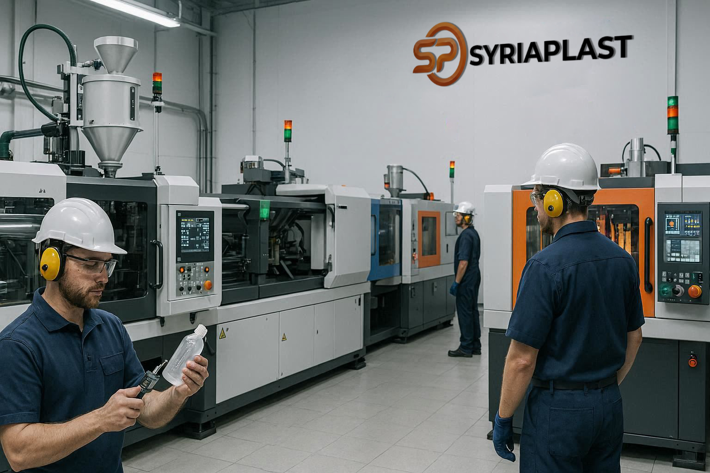

أحدث تقنيات الحقن والنفخ في صناعة البلاستيك: كيف تضمن سوريا بلاست أعلى معايير الجودة؟

لم تعد صناعة البلاستيك تعتمد فقط على المواد الخام، بل أصبحت تعتمد بشكل أساسي على التقنيات الصناعية المستخدمة في التصنيع. فكلما تطورت تقنيات الإنتاج، ازدادت جودة المنتجات وقوتها وقدرتها على تحمل ظروف التشغيل المختلفة.
الصناعة الحديثة تبدأ من التكنولوجيا
في معمل سوريا بلاست، يتم الاعتماد على أحدث التقنيات الصناعية في تصنيع المنتجات البلاستيكية، خاصةً تقنيات الحقن والنفخ، والتي تعد من أهم التقنيات المستخدمة في هذا المجال. إن هذه التقنيات تسمح بإنتاج منتجات دقيقة ومتينة تستخدم في العديد من القطاعات مثل:
- مشاريع المياه
- شبكات الصرف الصحي
- مشاريع البناء
- البنية التحتية
ما هي تقنية الحقن في صناعة البلاستيك؟
تقنية الحقن البلاستيكي (Injection Molding) تعد من أكثر تقنيات التصنيع دقةً وانتشاراً في الصناعات البلاستيكية. وتعتمد هذه التقنية على ثلاث مراحل أساسية:
- تسخين المواد البلاستيكية حتى تصبح سائلة.
- حقن المادة داخل قوالب صناعية دقيقة.
- تبريد المادة داخل القالب لتأخذ الشكل النهائي المطلوب.
وتتميز هذه التقنية بعدة مزايا مهمة:
- دقة عالية في تشكيل المنتجات
- إمكانية تصنيع أشكال معقدة
- إنتاج كميات كبيرة بجودة ثابتة
- قوة ومتانة في المنتج النهائي
تستخدم هذه التقنية في تصنيع العديد من المنتجات البلاستيكية التي تتطلب دقةً وجودةً عالية، من بينها الإكسسوارات والتوصيلات وقطع الوصل لأنابيب المياه والصرف الصحي.
ما هي تقنية النفخ في تصنيع البلاستيك؟
تقنية النفخ (Blow Molding) تستخدم بشكل أساسي في تصنيع المنتجات البلاستيكية المجوفة مثل الخزانات والحاويات. وتعتمد هذه التقنية على:
- تسخين المادة البلاستيكية
- تشكيلها داخل قالب
- ضخ الهواء داخل المادة لتأخذ شكل القالب
هذه العملية تسمح بإنتاج منتجات خفيفة الوزن وقوية في الوقت نفسه، كما تضمن توزيع المادة بشكل متوازن داخل المنتج. وتُستخدم هذه التقنية بشكل رئيسي في تصنيع خزانات المياه البلاستيكية التي ينتجها معمل سوريا بلاست بأربع طبقات مقاومة للعوامل الجوية.
كيف تطبق سوريا بلاست هذه التقنيات في الإنتاج؟
يعتمد معمل سوريا بلاست على منظومة تصنيع متكاملة تعتمد على أحدث تقنيات الإنتاج في صناعة البلاستيك، وذلك بهدف تقديم منتجات تلبي احتياجات مشاريع المياه والبنية التحتية. وتشمل هذه المنظومة:
- استخدام مواد خام عالية الجودة
- تطبيق تقنيات الحقن والنفخ الحديثة
- الالتزام بالمواصفات الفنية في جميع مراحل الإنتاج
- مراقبة الجودة بشكل مستمر أثناء التصنيع
هذا التكامل في عمليات التصنيع يساعد على إنتاج منتجات تتميز بالمتانة والكفاءة العالية.
الجودة: من اختيار المواد الخام حتى المنتج النهائي
في الاستخدامات الصناعية الحديثة، لا تتحقق الجودة في مرحلة واحدة فقط، بل هي عملية مستمرة تبدأ من اختيار المواد الخام وتنتهي بالمنتج النهائي. ونحن في سوريا بلاست نتعامل مع الجودة كجزء أساسي من نظام العمل، حيث يتم الاهتمام بكل مرحلة من مراحل الإنتاج لضمان تقديم منتجات موثوقة تلبي احتياجات المشاريع المختلفة.
المستقبل: استمرار التطوير والابتكار
مع استمرار توسع مشاريع البنية التحتية في سوريا، تزداد الحاجة إلى منتجات صناعية تتميز بالجودة والاعتمادية. ومن خلال اعتماد أحدث تقنيات التصنيع مثل الحقن والنفخ، تواصل سوريا بلاست تطوير منتجاتها الصناعية لتكون جزءاً أساسياً من الحلول المستخدمة في مشاريع المياه والبناء والبنية التحتية.
وتشمل المنتجات المُصنَّعة باعتماد هذه التقنيات في معمل سوريا بلاست: أنابيب HDPE، قساطل الصرف الصحي المموجة، خزانات المياه متعددة الطبقات، غرف التفتيش البلاستيكية، وأنظمة PPR وPVC مع كامل الإكسسوارات.